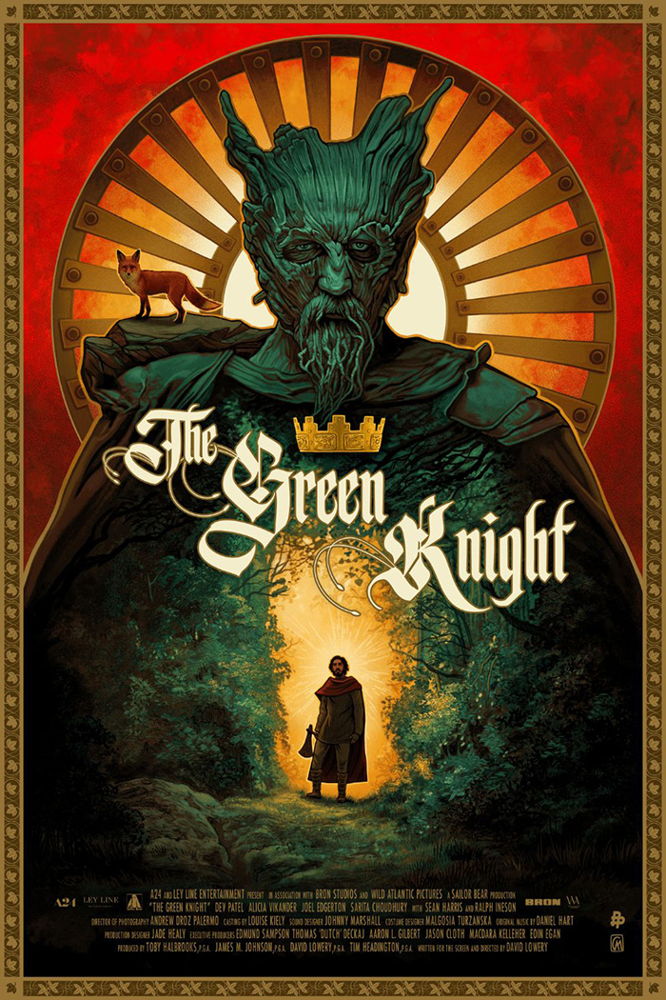
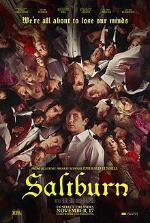
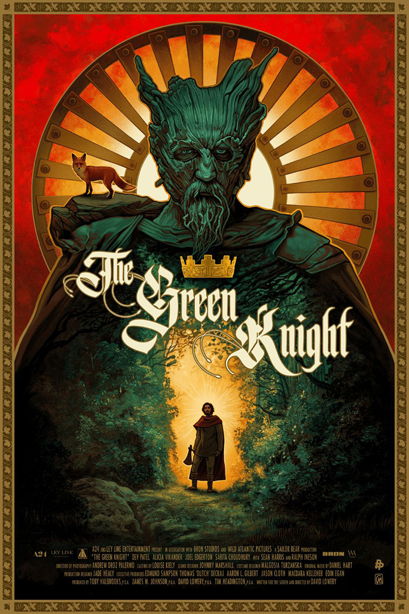
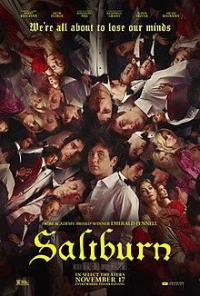
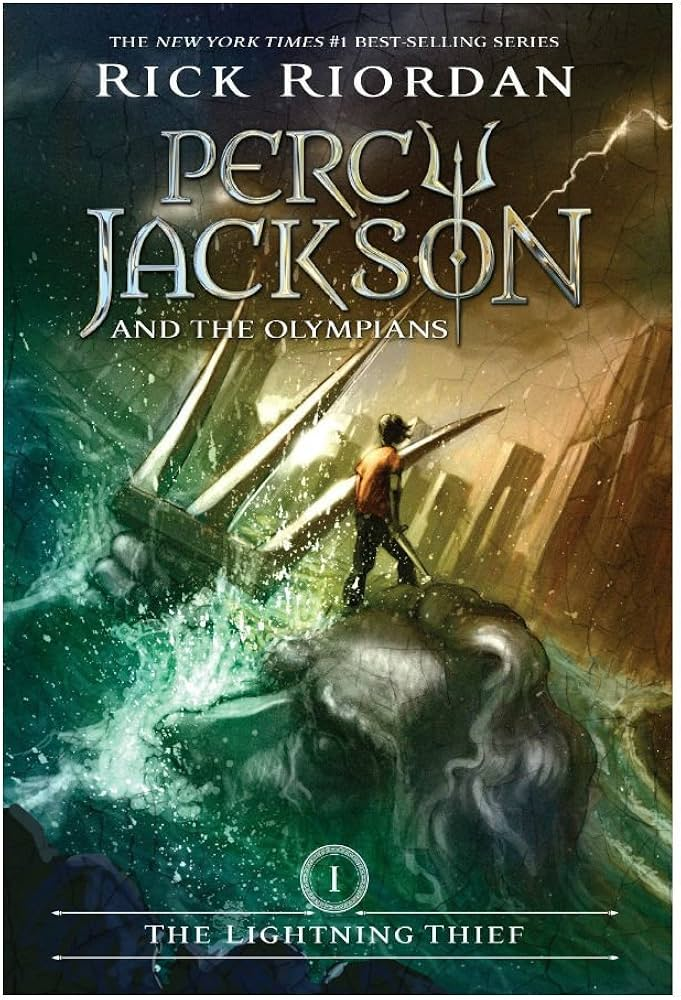
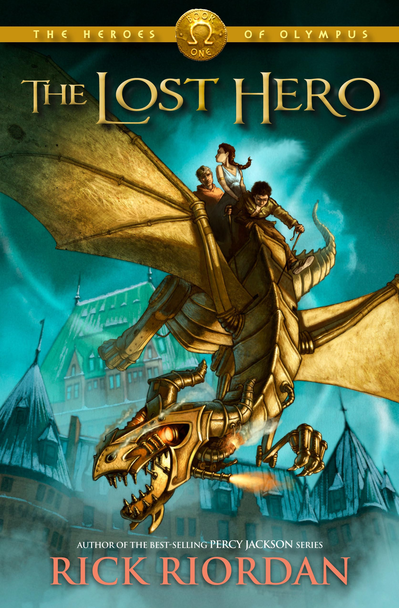
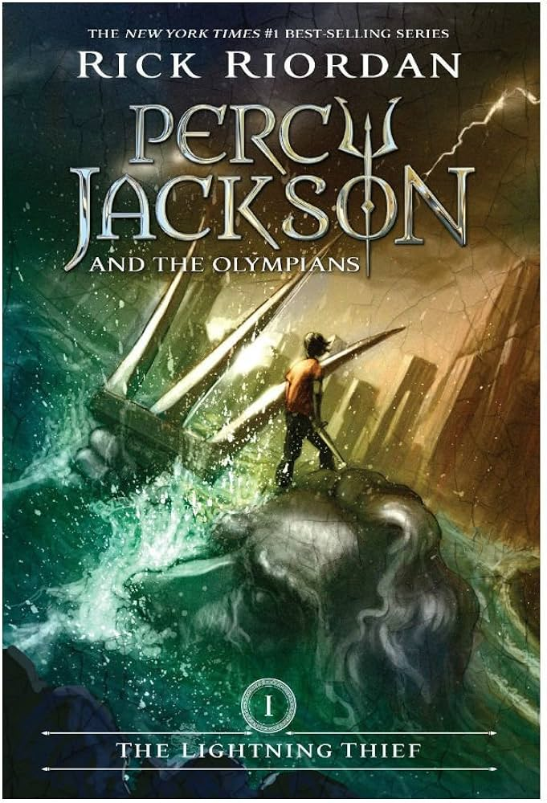
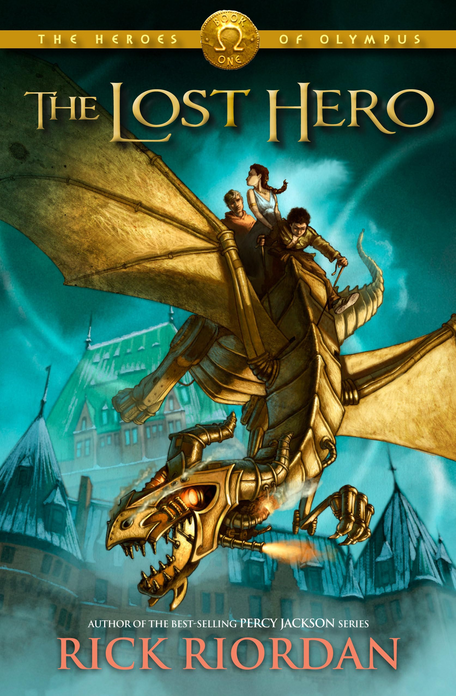

I was first introduced to the field of UI/UX a couple of years ago while working as an electrical engineering intern. While I appreciated the many, and I mean many, technical challenges, I quickly realized that the analytical nature of the work wasn’t fulfilling my creative side. I wanted to blend my problem solving skills with design, which led me to discover UI/UX. The idea of crafting intuitive and visually engaging digital experiences excited me in a way engineering never had, and from that moment, I knew I had found the right path.
Being born and raised in Philadelphia I was always drawn to the city life. While I could have gone with a university with a more "traditional" college campus, Drexel offered everything I could ever want. Close to home, hands on experience, incredible academics and of course that same old city life. I am very grateful towards the co-op program which let me explore different career paths which ultimately led me to UI/UX.
Outside of my work, I love immersing myself in different forms of storytelling, whether it's through video games, movies, or books. Gaming has always been a favorite hobby of mine, not just for the fun but also for the creativity and design behind it which also fueled my ambission for UI/UX. Seeing many of the creative decisions behind my favorite video games' user interface is always so inspiring to me. I also enjoy getting lost in a good movie or book.


 



 


